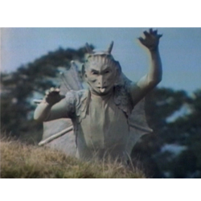

| Home | The Doctors | The Companions | The Villains |
|
|||
The Villains |
Bok
Bok is the gargoyle servant of Azal in the Third Doctor story The Dæmons. Made of stone, he is bulletproof. He is blown apart by a UNIT bazooka, but reformed moments later. He reverts to his statue form when Azal is defeated. |